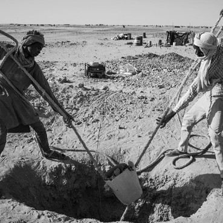

https://www.anothermag.com/art-photography/8931/hannah-hoch-reimagines-indigenous-african-artefacts
https://www.artsy.net/show/whitechapel-gallery-hannah-hoch?sort=partner_show_position
https://www.alamy.com/stock-photo/african-minerals-sierra-leone.html
https://berlinischegalerie.de/assets/downloads/presse/Pressetexte/Pressearchiv/2016/Press-kit_Dada-Africa_1.8.16_Berlinische-Galerie.pdf
https://africaupclose.wilsoncenter.org/child-labor-in-african-mines-where-are-we-now/
https://issafrica.org/iss-today/how-illegal-mining-is-driving-local-conflicts-in-nigeria
https://guardian.ng/news/why-nigerias-mining-sector-lags-behind/
https://www.mindat.org/